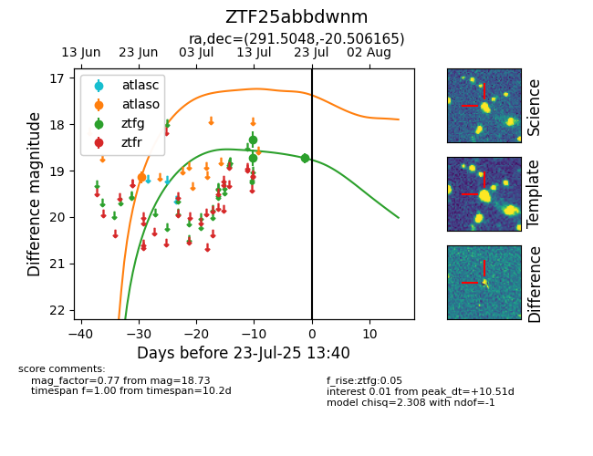

Target ZTF25abbdwnm at 2025-07-23 13:40, see:
FINK: fink-portal.org/ZTF25abbdwnm
Lasair: lasair-ztf.lsst.ac.uk/objects/ZTF25abbdwnm
ALeRCE: alerce.online/object/ZTF25abbdwnm
alt names
ZTF25abbdwnm (ztf,fink)
coordinates:
equatorial (ra, dec) = (291.5048,-20.50616)
galactic (l, b) = (17.9635,-16.56111)
photometry
last atlaso=19.14, ztfg=18.73
1 atlaso, 3 ztfg detections
